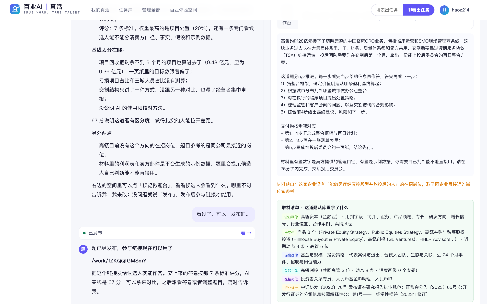

真活怎么用
五个模块：出任务的三种方式、候选人做题、看答卷比候选人。一份手册讲一件事，每步一张真实截图，框出来的地方就是要点。
5 个模块
聊着出一道真活
不用一次说全，像跟同事交代一样，说一句最实际的要求就够了。哪家企业、考什么、做多久、要不要给候选人素材——缺的它一件件问；用时、给几年经验的人这类细节，它先按常理定好，最后一行复述给你，你只改不对的。
聊着出一道真活
不用一次说全，像跟同事交代一样，说一句最实际的要求就够了。哪家企业、考什么、做多久、要不要给候选人素材——缺的它一件件问；用时、给几年经验的人这类细节，它先按常理定好，最后一行复述给你，你只改不对的。
开头可以这样说
- 「我们缺一个能把销售数据理清楚、说出问题到底在哪的人。」
- 「要招一个能把 IP 形象延展成表情包、海报、短视频封面的设计师，想看他真实干活的样子。」
- 「下个月欧洲客户来审厂，想找个能把交付计划排明白的人，给 3 年以内经验的。」
- 「这是我们去年校招用过的一道题（贴进来或传文件），照这个思路换成今年的业务。」
- 「想给宁德时代出一道真活，还没想好考什么，你先问我。」
不用说的：职位名、评分标准、材料清单、任务书怎么写——这些它会帮你出，出好你再改。
1说一句最实际的要求
右上角点「聊着出任务」。不知道怎么开口，就点下面的例子，它会放进输入框，改成你自己的话再发。
- 1一句大白话：缺什么样的人、最近卡在哪
- 2点一个例子，改成你的话再发
2它先记下，再一次只问一件
你说的它先复述一句，接着只问最缺的那一件，比如哪家公司。库里有这家就直接用企业资料；没有就请你说几句。

- 1你的一句话
- 2它记下要找的人，接着问：哪家公司
3几句话介绍就行，没想到的它会追问
公司介绍不用写全，几句话够了。题目要用到的东西它会主动问，比如这道 IP 设计题，它会问要不要把 IP 设定图给候选人。
- 1几句话介绍公司
- 2它追问：IP 设定图、活动文案要不要给候选人
4能点选就点一下
需要你拿主意的地方，它给两三个选项，点一下就行；也可以直接打字回答。
- 1点一个选项，或者直接打字
5最后一行复述全题，你只改不对的
企业｜要找的人｜考什么｜建议用时｜给几年经验的人｜素材。你没说的用时、经验段是它按常理定的，不对就点「改一下」说一句。
- 1一行复述全题：点「就这样出」，或「改一下」
6有素材就传，等它变成「已就绪」再发
图片要先让 AI 看一遍，十几秒。顺手说一句是「给候选人看的」还是「让你照着出题的参考」，不说默认给候选人看。

- 1黄色 = 还在上传、AI 在看图；变成「已就绪」再发
- 2没就绪时发送键是灰的
7在右边看题，确认了再发布
不满意直接说哪里不对，比如「材料再加一份竞品数据」「难度降一点」，它会改题；改完记得重跑 AI 基线。

- 1说「可以，发布吧」就发布了
- 2这条参与链接发给候选人
- 3右边是这道题的空间：任务书、材料、从库里取了什么
8出好以后改用时、补图：直接说
用时可设 20–240 分钟，计时器和任务书里写的时长一起改；补的图候选人能看原图。这两样改完马上生效，不用重跑 AI 基线。也可以在题目空间「问题与任务 → 时间与操作台」里直接改用时。
- 1直接说：用时改成 180 分钟；把这张图附到题目里
- 2绿点 = 已生效，候选人那边马上看得到
- 3右边同步：建议 180 分钟
填表出一道真活
习惯一次写完再交，就用「填表出任务」。只有企业和要找的人必填，其余都能空着；每一栏都用大白话写，不用套职位名和术语。拿不准怎么写，就换「聊着出任务」，让它问你。
填表出一道真活
习惯一次写完再交，就用「填表出任务」。只有企业和要找的人必填，其余都能空着；每一栏都用大白话写，不用套职位名和术语。拿不准怎么写，就换「聊着出任务」，让它问你。
每一栏可以这样写
- 「你在找什么样的人：「一个能把销售数据理清楚、说出问题到底在哪的人」」
- 「想考什么：「就考他拿到一堆乱数据，能不能一小时内说清哪里出了问题」」
- 「想考什么：「给 3 年以内经验的，三个小时，交一页纸给老板看」」
- 「素材：「上周的销售周报截图，让他照着真实数据做」」
不用写的：职位名、评分标准、材料清单、任务书——这些平台会出，出好你再改。
1第 1 步：企业、要找的人、想考什么
每栏一两句大白话就行。时长写在「想考什么」里，比如「一小时内」「三个小时」，出好以后也能在题目空间里改。

- 1选企业：从库里挑；库里没有就照写，再贴一段介绍
- 2直接说要什么样的人，不用套职位名
- 3想考什么、给几年经验的人、多长时间
- 4给候选人看的素材：表格、图纸、截图、PDF
- 5以前用过的题：只给 AI 参照，候选人看不到
2第 2 步：给答题人配 AI、选操作台
一般都用默认：千问 + 按岗位自动选操作台。点「出任务」，约 2–3 分钟。

- 1答题人用哪个 AI（默认千问）
- 2一般选「按岗位自动选」
- 3出好的题先是「待发布」
3在题目空间预览、发布、发链接
先「预览做题台」看候选人会看到什么；没问题点「发布」，参与链接才能用（已发布的题这里显示「下架」）。

- 1预览做题台 → 发布 → 复制参与链接
- 2哪里不对写一句，按你的意见改（约 1 分钟）
4改用时
「问题与任务」→「时间与操作台」，填分钟数（20–240），点「改用时」。计时器和任务书里写的时长一起改。

- 1填分钟数，点「改用时」
从任务库挑一道
不想从零开始：任务库里有各行业挑好的任务，可以原样换成你们公司，也可以只照它的思路出一道新的。挑好以后，用一两句话说说你们公司和要找的人就行。
从任务库挑一道
不想从零开始：任务库里有各行业挑好的任务，可以原样换成你们公司，也可以只照它的思路出一道新的。挑好以后，用一两句话说说你们公司和要找的人就行。
挑好以后可以这样说
- 「「就用这道，换成我们公司：我们是做储能的，四百人，欧洲工厂刚投产」」
- 「「照这道的思路出，但我们要找的是能对接海外客户的人，难度低一点」」
- 「「这道挺好，时间改成两小时，其他不动」」
不用说的：题目怎么改写、材料怎么换——它会照原题的路数换成你们的情况。
1按行业挑一道
顶部「任务库」。每张卡写着要找的人、要交什么、建议用时。

- 1按行业筛
- 2一张卡 = 一道题：找什么人、交什么、多久
- 3点「看任务」看全题
2选「原题直出」还是「仅做参考」
原题直出：背景、材料和数字换成你们公司的；仅做参考：照它的题型和推进方式，出一道新的。接下来只问你是哪家企业、要找什么样的人。

- 1原题直出：换成你们公司
- 2仅做参考：照思路出新题
候选人怎么做题
打开出任务的人发来的链接就能做，不用注册。材料、作答、AI 都在一个页面里，每一步自动记录，交卷后出报告。AI 随便用，像平时干活跟同事商量一样问它就行；评的是你怎么用，关键判断要自己做。
候选人怎么做题
打开出任务的人发来的链接就能做，不用注册。材料、作答、AI 都在一个页面里，每一步自动记录，交卷后出报告。AI 随便用，像平时干活跟同事商量一样问它就行；评的是你怎么用，关键判断要自己做。
可以这样问 AI
- 「「m1 和 m3 里的销量对不上，帮我看看差在哪」」
- 「「我打算先算缺口再排补位，这个顺序有没有漏掉什么」」
- 「「这是我的结论，你挑挑毛病：哪句证据不够」」
- 「「把这三段整理成一页纸的结构，数字我自己核」」
少这样用：把整道题丢给 AI、原样照抄它的回答、不核对就用它给的数字——报告里会看得出来。
1先读任务书和规则
任务书说清了要你做什么、交给谁；规则里写着可以随便用 AI，评的是你怎么用。

- 1任务书：要做什么、交给谁
- 2规则：可以用 AI；材料里没有的数据要标注假设
2选做法，留个名字开始
一般选「在本页的操作台做」。联系方式选填，填了报告会发给你。

- 1选做法（推荐第一种）
- 2留名字，点「开始做」
3左边推进和材料，中间作答，右边 AI
分步的题一步一步来，答完上一步才开下一步。计时到点不会强制停，但用时会记下来。

- 1推进：一步一步答
- 2材料包，点开在中间看
- 3在这里写交付物
- 4AI 助手随便问
- 5计时 / 交卷
4最后一问（选填）
「如果再给你一天，你会先改哪里、为什么？」有余力就写，不写不扣分；写清楚哪里还不够可靠，算进评价。

- 1最后一问，写了显示「已写」
- 2直接在这里写
5交卷：点两次
点「交卷」后按钮变红，再点一次才交上；交了就不能改。约 1–2 分钟出报告。

- 1再点一次确认交卷
看答卷、比候选人
候选人交卷后，在这道题的空间里看分数、看报告、把几个人并排比。觉得题不对，在空间里用一句话说哪里要改，不用自己动手改题。
看答卷、比候选人
候选人交卷后，在这道题的空间里看分数、看报告、把几个人并排比。觉得题不对，在空间里用一句话说哪里要改，不用自己动手改题。
改题可以这样说
- 「「大家第 2 项都是 0 分，可能题意没说清，把要求写具体一点」」
- 「「材料太少了，再加一份竞品价格表」」
- 「「难度降一点，给应届生做」」
- 「「用时改成 120 分钟」」
改完题记得「重跑 AI 基线」，不然分数没法和基线比；只改用时不用重跑。
1题目空间：先看总数
顶部四个数：多少人参与、多少人交卷、平均分、AI 基线（AI 自己做一遍的分）。这个空间的链接带管理密钥，可以转给同事，别发给候选人。
- 1参与 / 交卷 / 平均分 / AI 基线
- 2「做题情况与评分」看每个人
2每个人的分数和报告
按分数排好了。「报告链接」可以单独发给同事看。
- 1总分
- 2看报告
- 3报告链接
3报告里看什么
上面是交付物原文，下面是结果和过程；再往下是逐条评分（每条有证据）、AI 使用能力、和 AI 基线逐条比。
- 1总分，和 AI 基线差多少
- 2过程：用时、问了几次 AI、哪些自己做、哪些交给 AI
4勾几个人，并排对比
勾 2–4 个人点「对比所选」；「导出候选名单」出一张表。
- 1勾 2–4 个人
- 2对比所选
- 3导出候选名单
5逐条比，看谁哪里强
每条评分标准逐人对比，最高的标绿；下面是每个人做得好的和差的地方。
- 1逐条对比，最高的标绿
- 2每个人做得好的 / 差的地方